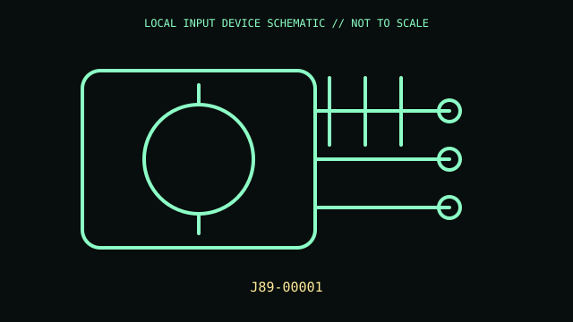

[ ADAPTIVE AND SWITCH-ACCESS CONTROLS // IDENTIFIED COMPONENT ]
Microsoft Adaptive Joystick Button
Wireless/wired adaptive control with joystick-style topper, for use with Microsoft Adaptive Hub.

MODEL IDENTIFICATION: J89-00001. Confirm the printed SKU, revision, bundle, region, and included accessories before repair or compatibility claims.
Model specifications
| Catalog leaf | Adaptive and switch-access controls |
|---|---|
| Exact model / identifier | J89-00001 |
| Mechanism and primary specifications | Programmable adaptive button with interchangeable joystick toppers; USB-C charging/wired connection; pairs with Adaptive Hub for host input; configuration via Microsoft Accessory Center. |
| Compatibility and interface caveats | Requires compatible Adaptive Hub for documented host workflows; do not treat USB-C as a general-purpose joystick connection. Confirm J89-00001 on package label and current guide. |
| Revision identification | Record the full label and software/firmware revision. Similar product-family names may use different protocols, components, connectors, or bundled accessories. |
Preservation and service
Store removable toppers with device; charge by documented cable and do not pry its battery enclosure. Clean switch surface dry.
Separate observed condition and test setup from vendor-published specifications; record host OS, driver/app version, cables, adapters, and accessories.
Primary manufacturer sources
- Microsoft Adaptive Joystick ButtonManufacturer documentation; verify the exact SKU, revision, region, and accessories against the unit label.
- Microsoft adaptive buttons guideManufacturer documentation; verify the exact SKU, revision, region, and accessories against the unit label.
Manufacturer support pages can change; retain the applicable manual and its revision in the physical equipment record.